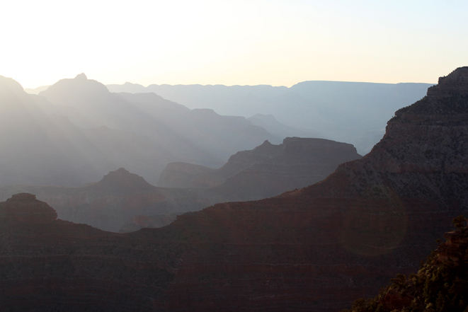
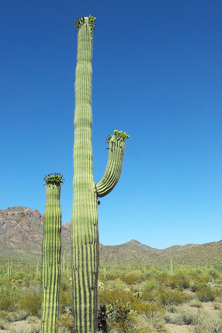
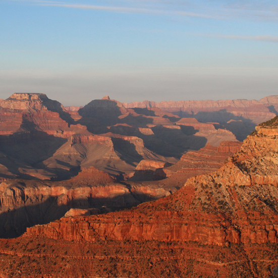
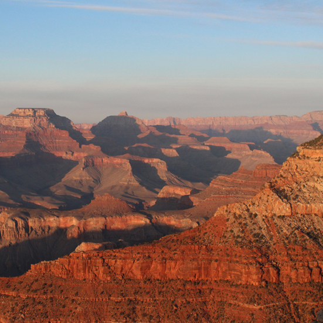
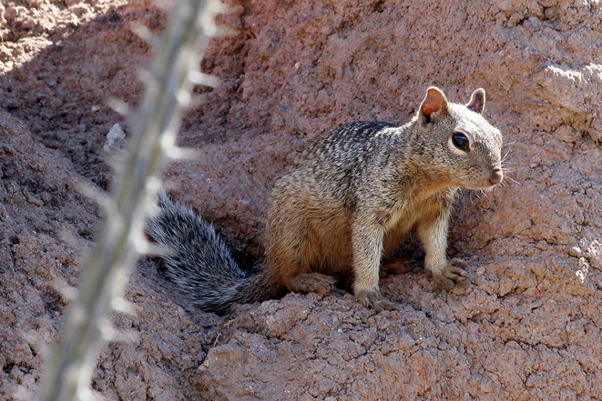
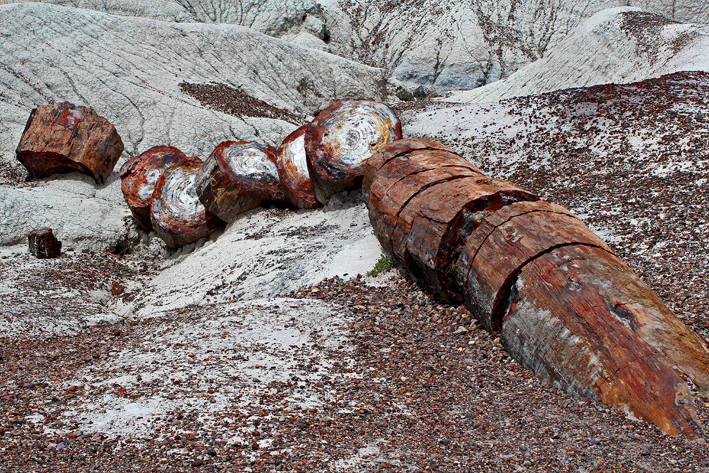
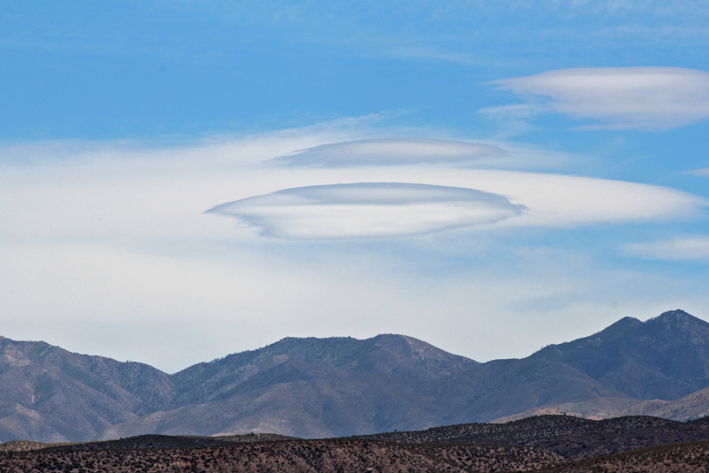

Arizona, USA

Desert, Arizona
At the start, my 'must see' list for Arizona was actually quite short:
Cactus; Desert; Rain in the Desert - tricky; Frank Lloyd Wright's Taliesin West; Meteor Crater; Kitt Peak Observatory; Lowell Observatory; Grand Canyon; Monument Valley.
The reason for the list's brevity was simple.
I wanted to explore, to see what was actually there, to stumble upon things, to go with the flow.
There was a day that I could either go West or East. I could see storm clouds to the East so I went that way and followed the clouds.
What a great decision. The storm was amazing and gave me the opportunity to photograph rain in the desert from my list.
Exploring South from Tucson, right along the Mexico border, I did get to witness the Border Patrol guys in action, with their guns drawn on a car full of possible illegal immigrants.
Kitt Peak Observatory was another on my list, a mountain ridge dotted with white-domed telescopes of various sizes. I spent the entire day doing tours of the main telescopes and was even able to look at the sun through the specially designed sun telescope.
A highlight that wasn't on my list was the Titan Missile Museum to the South of Tucson. An interesting and entertaining day of something I never thought I'd ever see.
Click again to hide
Fabulous Streaky Clouds
Driving about you see a lot of road and a lot of sky.
Sounds pretty boring unless you like driving and like looking at the sky.
Luckily I like both. Driving is pretty much the only time I sing out loud (incredibly badly) and I just can't get enough of the sky. Nature is amazing and I appreciate some of the weird results that can happen, like these streaky clouds.
So, it always pays to look up, or behind you. You never know what you'll see.
Click again to hide
Sunrise at the Grand Canyon
The Grand Canyon is so iconic, how could I possibly resist getting up early to photograph it at sunrise? I even managed to get a few of the other tour guests to join me.
The cold, strong wind didn't stop the show though. Beautiful.
Click again to hide
Saguaro Cactus
Standing tall, with raised 'arms', Sagurao Cactus have such character.
They were flowering while I was travelling around, and sometimes the flowers looked like hair on a balding man, giving them even more personality.
Click again to hide
Saguaro Cactus
The Molton Barn is an icon of Jackson Hole in Wyoming.
Click again to hide
 

Sunset at the Grand Canyon
After finding our rooms and getting our bearings, a few intrepid tour guests joined me on the South Rim of the Grand Canyon to watch (and photograph) the sun setting.
The colours and shadows were so lovely to watch, even when the temperature dropped.
Click again to hide
A Squirrel
Squirrels are pretty much everywhere in the US. This guy was one of the bravest, popping out from his hiding spot to check out what I was doing.
It was a good thing I turned around to grab a different lens, because I wouldn't have seen him otherwise.
Click again to hide
Stretching Hummingbird
Ahh... Hummingbirds.
A stinking hot day, wandering around a 'cactus museum' in Tucson, and I found the Hummingbird enclosure. It seemed empty, but it was cool so I sat for a minute to enjoy the shade.
Then a blur whizzed passed my head. And another. Too fast to follow.
It turns out there were hundreds of Hummingbirds in there, but they are so tiny and so quick they are very easy to miss. I ended up staying in there for an hour and got some great shots. And it was cool...
Click again to hide
Petrified Tree
I heard about the Petrified Forest while I was on an organised tour and decided to find it once the tour was finished. Luckily, it's not too far from the Meteor Crater, so I spent a couple of nights in Winslow AZ and saw both.
The Petrified Forest is a huge place. It's not just one simple wooden path to walk around, it's lots of paths amongst spectacular scenery with a lot of driving in between. Definitely worth taking a whole day to explore.
But this one reminds me of sausages...
Click again to hide
Aliens Are Coming!
Not really, just a cloud. But what a cloud!.
A pretty good day included a pretty awesome cloud formation.
I've seen photos of clouds like these with descriptions along the lines of... "UFO sighted near Smalltown USA!". I'm impressed that I saw one in real life and even more impressed that I managed to photograph it.